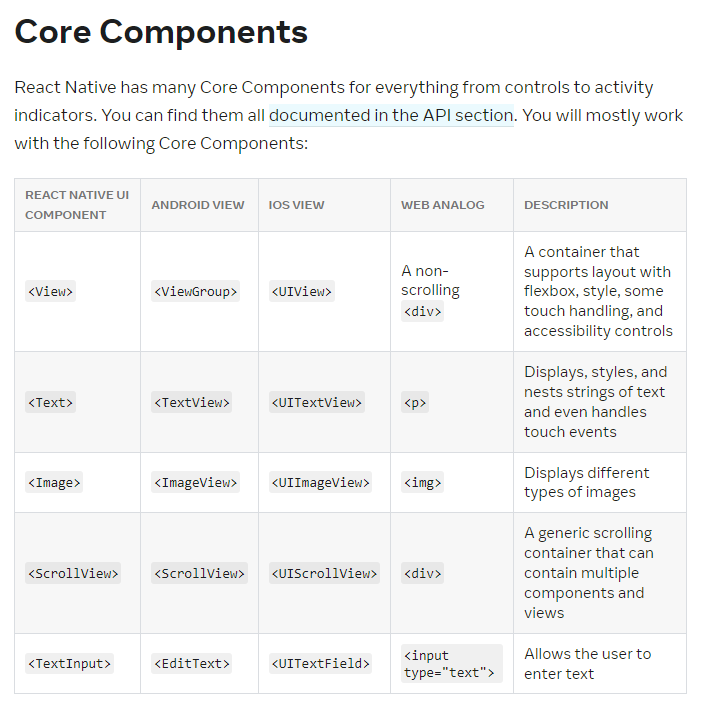
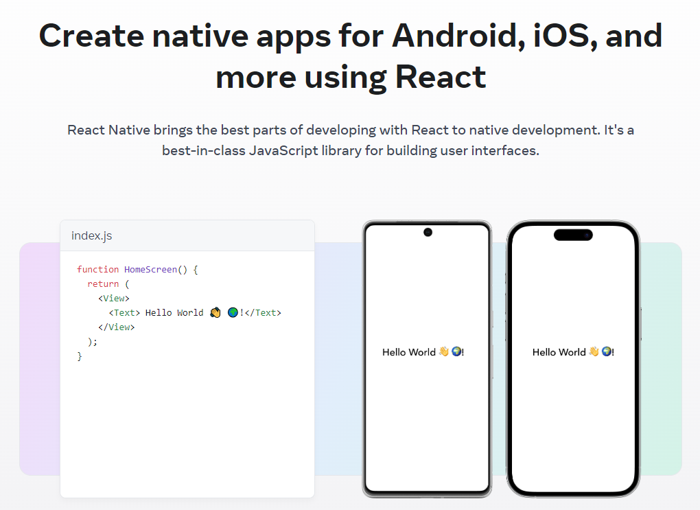

React Native And Multi Platform Development
Hello to any and all who come across this post! Hope you're having yourself a good day so far and that it continues as such! If not, I do hope the day improves with time and things settle!
In this post, I'll be talking about React Native (here's the website for it), what it is and what it's used for. There's an expectation of understanding React.js as a minimum. I'm currently in the process of learning and utilizing it as part of an assignment and I currently believe it to be very an interesting approach to multi-platform development while using a lot of the same approach as using regular React.js.
React Native
What is it?

React Native utilizes React.js as a base to create native apps, or apps that run natively on its intended device. What this means is that programming in React Native is basically the same as you would with React.js itself, but with certain differences. The purpose behind React Native is to deploy an app geared towards various other devices, like iOS or Android. It can take advantage of platform-specific utilities and make the most of them. How it does this is by using more generic components that fulfill the purpose of commonly used HTML elements.
Why use it?

Taking the above image into consideration, we can see some of React Native's core components (here's the page that talks in detail about core components and native components). Using <View> as an example, you can see that it has a React Native version, an Android version <ViewGroup>, an iOS version <UIView> and a web version <div>. When utilizing the React Native version of the component, it'll automatically build the component to match the currently used device. This really saves time if you intend on building your app for various different devices as you focus on creating your app once and deploying it to whichever device you wish to do so. If for any reason a specific platform has to be specially addressed, React Native also allows one to make use of those platform-specific tools and make those changes manually.
Multi-platform Deployment

As stated before, React Native allows for deployment onto multiple separate platforms. This also means that while you develop your app, you are able to run development versions of your app within these specific devices as well. Let's say you want to test for both web and Android. React Native takes advantage of a framework called Expo (here's the website for Expo) to facilitate the process of building and running onto multiple platforms. With this, it's possible to run your React Native app within your actual Android device or an emulated device you might have installed within your own computer. As you make changes to your app, you can see the changes update in realtime which really saves on time.
Conclusion
Wrapping one's head around a more generic version of React.js might take a bit of time, but once the specifics have been understood, it'll feel the same as running any other React.js app. The usage of components and hooks are still as useful as before while the simplified version of regular elements allow us to create apps for more devices, which also means for more potential users. Allowing users their preferred method of using your software will always be something important to consider.
For those who read through this post, I very much appreciate your time and patience! Hopefully the extra insight into React Native piques your interest in trying it out for yourself and deploying even a simple app for the sake of testing. As always, happy coding!